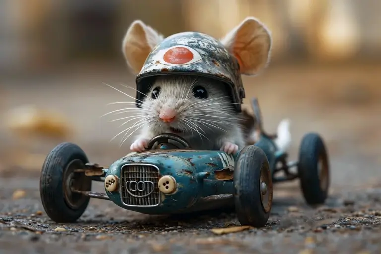
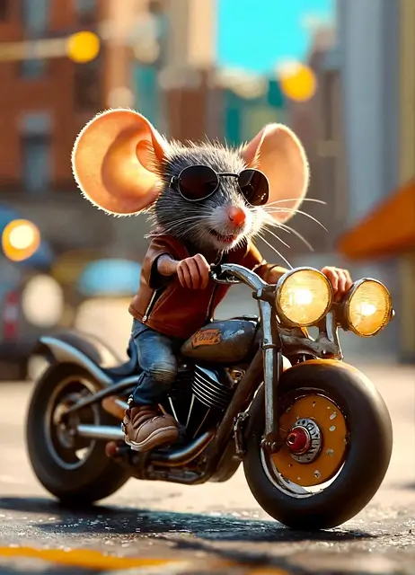
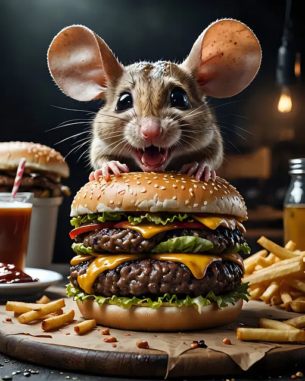
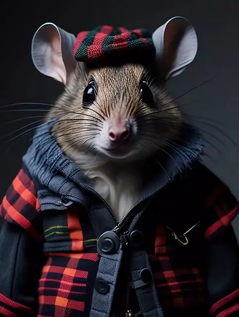

Slider de Photos
Super souris collection
Avancer
Clavier
Diaporama
Pagination
Délégation
POO

Exemple de réalisation par AI
Souris à la campagne

Souris en moto

Souris affamée
Souris en ville
Souris en cuisine
Souris en scooter

Souris écossaise